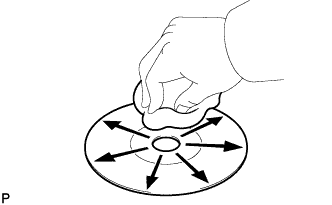

СИСТЕМА НАВИГАЦИИ (для моделей с DVD) > ОПИСАНИЕ СИСТЕМЫ |
| ОПИСАНИЕ СИСТЕМЫ НАВИГАЦИИ |
Способы отслеживания положения автомобиля
Крайне важно, чтобы система навигации правильно отслеживала текущее положение автомобиля и отображала его на карте. Существуют 2 способа отслеживания текущего положения автомобиля: автономная (точный расчет траектории) навигация и навигация с помощью GPS* (спутника). Оба способа навигации используются во взаимодействии друг с другом.
| Принцип работы | Описание |
| Расчет положения автомобиля | Дисплей модуля системы навигации индикации рассчитывает текущее положение автомобиля (направление и текущее положение) при помощи сигналов отклонения от направления от гиродатчика и сигналов пройденного расстояния от датчика скорости автомобиля, и на основании этого формирует маршрут. |
| Обработка изображения карты | Дисплей модуля системы навигации и индикации обрабатывает данные местоположения автомобиля, траекторию движения автомобиля и картографические данные с диска с картой. |
| Корреляционное наведение по карте | Картографические данные, хранящиеся на диске, сравниваются с данными траектории движения и местоположения автомобиля. После этого положение автомобиля сопоставляется с ближайшей дорогой. |
| Коррекция GPS | Положение автомобиля сопоставляется с положением, вычисленным системой GPS. Затем данные измеренного положения GPS сопоставляются с данными траектории движения и текущего положения автомобиля. При значительном расхождении расчетов применяется вычисление местоположения посредством системы GPS. |
| Коррекция расстояния | Сигнал пройденного расстояния от датчика скорости автомобиля включает погрешность, вызванную износом шин и проскальзыванием между шинами и поверхностью дороги. Коррекция расстояния выполняется, чтобы учесть данные погрешности. Дисплей модуля системы навигации и индикации автоматически корректирует сигнал пройденного расстояния для компенсации разницы между этим сигналом и данными расстояния согласно карте. Коррекция обновляется автоматически. |
Автономная навигация
Данный способ определяет относительное положение автомобиля на основании траектории движения, определенной гиродатчиком и датчиком скорости автомобиля.
Гиродатчик
Вычисляет направление посредством определения угловой скорости. Он находится в дисплее модуля системы навигации и индикации.
Датчик скорости автомобиля
Используется для вычисления пройденного расстояния автомобиля.
Навигация GPS (спутниковая навигация)
Данный способ определяет абсолютное местоположение автомобиля при помощи радиоволн от спутников GPS*.
| *a | Текущая долгота/широта/высота вычисляется по времени поступления радиоволн от 4 спутников. | *b | GPS |
| Количество спутников | Измерение | Описание |
| 2 или менее | Измерение невозможно | Положение автомобиля не может быть определено из-за недостаточного количества спутников. |
| 3 | Возможно двумерное измерение | Положение автомобиля вычисляется на основании долготы и широты (данный расчет менее точен, чем трехмерное измерение). |
| 4 | Возможно трехмерное измерение | Положение автомобиля вычисляется по текущей долготе, широте и высоте. |
Корреляционное наведение по карте
Текущий маршрут движения вычисляется автономной системой навигации (в соответствии с показаниями датчика скорости автомобиля и гиродатчика) и системой навигации GPS. После этого данная информация сопоставляется с возможным маршрутом согласно картографическим данным, хранящимся на диске, а затем метка положения автомобиля устанавливается на ближайшую дорогу.

| ОПИСАНИЕ СЕНСОРНОГО ЭКРАНА |
Сенсорный переключатель - это сенсорный (интерактивный) переключатель, управляемый посредством касания экрана. При нажатии соответствующей клавиши внешнее стекло прогибается и соприкасается с внутренним стеклом в месте касания. В результате измеряется коэффициент трансформации по напряжению и, таким образом, определяется место касания.
| ОПИСАНИЕ ПРОИГРЫВАТЕЛЯ DVD-ДИСКОВ (для моделей с навигационной картой) |
Панель модуля системы навигации использует лазерный датчик для считывания цифровых сигналов, записанных на DVD-диске.
| ОПИСАНИЕ ПРОИГРЫВАТЕЛЯ DVD-ДИСКОВ |
DVD-проигрыватель способен воспроизводить только DVD-видеодиски, DVD-аудиодиски и компактные видеодиски со следующей маркировкой:
Меры предосторожности по работе с дисками
Чистка
|  |
Если поверхность диска загрязнена, протрите диск мягкой тканью, например, салфетками для очистки очков с пластмассовыми окулярами, от центра к краю в радиальном направлении.
| ОПИСАНИЕ ПРОИГРЫВАТЕЛЯ КОМПАКТ-ДИСКОВ |
Проигрыватель компакт-дисков использует лазерный датчик для считывания цифровых сигналов, записанных на компакт-диске (CD). Он воиспроизводит музыкальные и другие записи посредством преобразования цифровых сигналов в аналоговые.
Поддерживаемые форматы компакт-дисков
Данный проигрыватель способен воспроизводить только компактные аудиодиски, диски CD-R (компакт-диск с возможностью однократной записи) и диски CD-RW (перезаписываемый компакт-диск) со следующей маркировкой:

Меры предосторожности по работе с дисками
Чистка
Если поверхность диска загрязнена, протрите диск мягкой тканью, например, салфетками для очистки очков с пластмассовыми окулярами, от центра к краю в радиальном направлении.
| ОПИСАНИЕ ФОРМАТОВ МР3 / WMA |
Поддерживаемый формат файлов MP3
| Поддерживаемый формат | MP3 (MPEG1 LAYER3, MPEG2 LSF LAYER3) |
| Поддерживаемая частота дискретизации |
|
| Поддерживаемая скорость передачи двоичных данных |
|
| Поддерживаемые канальные режимы | Моно, стерео, квазистерео и двухканальный |
Поддерживаемый формат файлов WMA
| Поддерживаемый формат | Версия формата WMA 7, 8 и 9 |
| Поддерживаемая частота дискретизации | 44,1, 48 (кГц) |
| Поддерживаемая скорость передачи двоичных данных |
|
Информация о тегах ID3 и WMA
Файлы МP3 имеют теги ID3, в которых хранится дополнительная текстовая информация. В них сохраняются названия мелодий и исполнителей.
Файлы WMA имеют теги WMA, в которых хранится дополнительная текстовая информация. В них сохраняются названия мелодий и исполнителей.
Поддерживаемый формат носителя
Для воспроизведения файлов MP3/WMA могут использоваться только диски CD-ROM, CD-R (компакт-диск с возможностью однократной записи) и CD-RW (перезаписываемый компакт-диск).
Поддерживаемый формат носителя
Поддерживаемый формат носителя
| Формат компакт-дисков | CD-ROM Mode 1, CD-ROM XA Mode 2 Form 1 |
| Формат файлов | ISO 9660 Level 1 и Level 2 (Joliet, Romeo) |
Стандарты и ограничения
| Максимальное количество уровней каталогов | 8 уровней |
| Ограничение количества символов в имени файла/каталога | 32 символа |
| Максимальное количество каталогов | 192 (включая пустые каталоги, корневые каталоги и каталоги, не содержащие MP3/WMA-файлы) |
| Максимальное количество файлов на диске | 255 (включая файлы формата, отличного от MP3/WMA) |
Имена файлов
Распознаются и воспроизводятся как файлы MP3 или WMA только файлы с расширением ".mp3" или ".wma".
Файлы MP3 или WMA должны быть сохранены с расширением ".mp3" или ".wma".
| ОПИСАНИЕ ТЕХНОЛОГИИ BLUETOOTH |
| *a | Радиоприемник (со встроенной приемной антенной "Bluetooth") | *b | Портативный аудиоплеер с поддержкой технологии "Bluetooth" |
| *c | Мобильный телефон с поддержкой технологии "Bluetooth" | *d | Вышка мобильной связи |
"Bluetooth" является зарегистрированной торговой маркой Bluetooth SIG. Inc.
Bluetooth является новой технологией беспроводной передачи данных в диапазоне 2,4 ГГц.
Функция громкой связи
Между радиоприемником со встроенной системой "Bluetooth" и мобильным телефоном с поддержкой "Bluetooth"* может быть установлено беспроводное соединение на основе технологии "Bluetooth". Эта функция позволяет использовать функцию громкой связи, даже когда он находится в кармане или в сумке. Поэтому для подключения мобильного телефона не требуется разъем или кабель.
*: Некоторые версии мобильных телефонов с поддержкой технологии Bluetooth могут не работать.
Функция воспроизведения аудиозаписей с использованием технологии "Bluetooth"
Между радиоприемником со встроенной системой "Bluetooth" и портативным аудиоплеером с поддержкой "Bluetooth"* может быть установлено беспроводное соединение на основе технологии "Bluetooth". Это позволяет прослушивать файлы, сохраненные в портативном аудиоплеере, через динамики автомобиля. Кроме того, непосредственно с радиоприемника в сборе можно выполнять такие операции, как начало/остановка воспроизведения.
*: Некоторые модели аудиоплееров с поддержкой "Bluetooth" могут оказаться несовместимыми с системой "Bluetooth" автомобиля, либо записанная на них музыка будет воспроизводиться, но возможности управления с использованием радиоприемника окажутся ограниченными.
Совместимые аудиоустройства с поддержкой "Bluetooth"
| Технические характеристики "Bluetooth" | Версия 1.1 или выше (рекомендуется Версия 2.0 + EDR или выше) |
| Профили |
|
| Максимальное количество аудиоустройств, которые могут быть зарегистрированы | 2 |
| РАДИОВЕЩАНИЕ |
Радиочастотный диапазон
Радиовещание осуществляется в радиочастотном диапазоне, приведенном в таблице ниже.
Зона обслуживания
Размер зон обслуживания при приеме сигналов радиовещания в диапазонах AM и FМ значительно отличается. Иногда прием стереофонических сигналов вещания в диапазоне FM невозможен, тогда как сигналы AM принимаются без помех. Стереофоническое вещание в диапазоне FМ имеет не только самую малую зону обслуживания, но также в наибольшей степени подвержено статическим и прочим помехам (“шумам”).
| *a | FM (стерео) |
| *b | FМ (моно) |
| *c | AM |
Проблемы при приеме радиосигналов
Интерференция
Помимо электрических помех, радиовещание в диапазоне AM подвержено воздействию других видов помех, называемых интерференцией. Возникая только ночью, интерференция является видом помех, когда радиоприемник принимает 2 радиосигнала от одного передатчика. Один радиосигнал отражается от ионосферы, а другой принимается непосредственно от передатчика.
| *a | Интерференция |
| *b | Ионосфера |
Многолучевое распространение
Многолучевое распространение является типом помех, когда радиоприемник принимает 2 радиосигнала от одного передатчика. Один радиосигнал отражается от зданий или гор, а другой принимается непосредственно от передатчика.
| *a | Многолучевое распространение |
Затухание
Причиной затухания являются объекты (здания, горы и другие крупные препятствия), которые частично отражают сигнал, что приводит к его ослабеванию, если объект располагается между передатчиком и автомобилем. Высокочастотные радиоволны, к которым относится и вещание в диапазоне FM, легко отражается от каких-либо препятствий. Однако низкочастотные радиоволны, к которым относится и вещание в диапазоне АM, практически не отражаются.
| *a | Затухание |
Помехи
Специалист должен иметь четкое представление о каждом виде помех, заявляемых клиентом. Для диагностики помех пользуйтесь следующей таблицей.
| Радиочастотный диапазон | Условие возникновения помех | Возможная причина |
| AM | Помехи возникают в определенном месте | Посторонние помехи |
| AM | Помехи возникают при слабом приеме сигналов радиовещания | Одна и та же радиопередача может транслироваться с нескольких передатчиков, что приводит к интерференции сигналов |
| AM | Помехи возникают только ночью | Биения звука при прослушивании передачи от удаленного источника вещания |
| FM | Помехи возникают в определенном месте | Многолучевое распространение или интерференция может привести к изменению частоты радиовещания в диапазоне FM |
| ОПИСАНИЕ ФУНКЦИИ АВТОМАТИЧЕСКОЙ РЕГУЛИРОВКИ ЗВУКА (ASL) |
Функция ASL автоматически регулирует громкость звука, обеспечивая качественное звуковоспроизведение даже при увеличении уровня шума автомобиля (по мере возрастания скорости автомобиля увеличивается громкость звука и т.д.).
Для реализации функции ASL используются сигналы скорости автомобиля, поступающие от щитка приборов.
| СИСТЕМА ПЕРЕДАЧИ ДАННЫХ |
Структура сети MOST
Устройства системы навигации обмениваются данными по сети MOST.
В качестве шины передачи данных в сети MOST используется экранированная витая пара.
Функции ведущего устройства в сети MOST выполняет ЭБУ системы навигации (дисплей модуля системы навигации и индикации).
Шины передачи данных MOST соединяют все подчиненные устройства с ведущим, образуя кольцо сети MOST.
Ведущее устройство передает сигнал выхода из спящего режима, при получении которого активируются все подчиненные устройства, подключенные к сети MOST.
ОПИСАНИЕ AVC-LAN
Компоненты системы навигации обмениваются данными друг с другом посредством AVC-LAN.
В качестве шины передачи данных AVC-LAN используется витая пара.
Функции ведущего устройства AVC-LAN выполняет дисплей модуля системы навигации и индикации.
| ОПИСАНИЕ ФУНКЦИИ ДИАГНОСТИКИ |
Система навигации имеет функцию диагностики (результаты отображаются на ведущем устройстве).
| ПОДРОБНОЕ ОПИСАНИЕ ОКНА ДИАГНОСТИКИ |
Экран "Service Menu" (меню обслуживания)
Экран "Failure Diagnosis" (диагностика неисправностей)
Окно режима проверки системы
| Наименование | Устройство | Метод передачи данных |
| EMVN | Дисплей модуля системы навигации и индикации | - |
| AMP | Компонентный стереоусилитель в сборе | Шина передачи данных в сети MOST |
| AUDIO | Радиоприемник в сборе | Шина передачи данных в сети MOST |
| RSE | Телевизионный дисплей в сборе | Шина передачи данных в сети MOST |
| CAMERA-C | ЭБУ системы помощи при парковке | Шина передачи данных AVC-LAN |
| USB BOX | ЭБУ мультимедийного интерфейса | Шина передачи данных AVC-LAN |
| Результат | Интерпретация | Действие |
| OK | Устройство не выдает код DTC | - |
| MOST | Ошибка передачи данных MOST | Выполните процедуру "MOST Line Check" (проверка шин MOST), чтобы проверить подключение всех устройств к сети MOST |
| EXCH | Устройство выдает код DTC типа "замена" | Найдите код DTC в окне "Unit Check Mode" (режим проверки устройства) и замените устройство |
| CHEK | Устройство выдает код DTC типа "проверка" | Найдите код DTC в окне "Unit Check Mode" (режим проверки устройства) |
| NCON | Устройство присутствовало ранее, но не реагирует в режиме диагностики | - Проверьте жгут проводов питания устройства - Проверьте цепь AVC-LAN устройства |
| NRES | Устройство отвечает в режиме диагностики, но не выдает сведения о DTC | - Проверьте жгут проводов питания устройства - Проверьте цепь AVC-LAN устройства |
| Наименование | Устройство | Метод передачи данных |
| VTR | Видеовыход (переходник видеовыхода) | Жгут электропроводки автомобиля |
| MIC | Микрофон телефона в сборе | Жгут электропроводки автомобиля |
| AUX | Переходник стереогнезда № 1 в сборе | Жгут электропроводки автомобиля |
Экран режима проверки устройства
| Дисплей | Описание |
| *1: название устройства | Целевое устройство |
| *2: Предыдущий диагностический код неисправности DTC | Отображаются результаты из памяти диагностики и выводимые коды DTC |
| *3: Текущие DTC | При проверке работы системы отображаются выданные диагностические коды неисправностей DTC. |
| *4: DTC | DTC (диагностический код неисправности) |
| *5: метка времени | Отображаются время и дата предыдущего кода DTC (год отображается в 2-значном формате) |
| *6: Переключатель сброса результатов диагностики | Удержание данного переключателя нажатым в течение 3 с удаляет данные памяти диагностики для заданного устройства (удаляются отображаемые данные и результаты диагностики системы) |
Экран MOST Line Check (проверка шин MOST)
| Наименование | Устройство |
| EMV-M | Дисплей модуля системы навигации и индикации |
| AMP | Компонентный стереоусилитель в сборе |
| AUDIO | Радиоприемник в сборе |
| RSE | Телевизионный дисплей в сборе |
| Результат | Интерпретация |
| OK | Во время проверки шин MOST получен ответ по данному соединению |
| NCON | Во время проверки шин MOST не получен ответ по данному соединению |
Экран Function Check/Setting (проверка/настройка функций)
Экран "Microphone&Voice Recognition Check" (проверка микрофона и распознавания голоса)
| Дисплей | Описание |
| *1: индикатор входного уровня микрофона | Входной уровень микрофона дискретизируется каждые 0,1 с, а результат отображается на восьмиступенчатой шкале |
| *2: Переключатель "запись" | Начинает запись |
| *3: Переключатель "стоп" | Прекращает запись |
| *4: Переключатель "воспроизведение" | Воспроизводит записанную звуковую информацию |
| *5: Индикатор записи | Включен во время записи |
Экран информации о GPS
| Дисплей | Описание |
| T | Система принимает сигнал GPS, но не использует его для определения местонахождения |
| P | Система использует сигнал GPS для определения местонахождения |
| - | Система не может принять сигнал GPS |
| Дисплей | Описание |
| 2D | Используется двумерный метод определения местонахождения |
| 3D | Используется трехмерный метод определения местонахождения. |
| NG | Данные о местонахождении не могут использоваться |
| Error | Произошла ошибка при приеме |
| - | Любое другое состояние |
| Дисплей | Описание |
| Position | Отображается широта и долгота текущего местоположения |
| Дисплей | Описание |
| Date | Отображается дата/время по Гринвичу (GMT), полученные от спутника GPS |
Экран датчиков автомобиля
| Дисплей | Описание |
| *1: SPD | Отображается состояние сигнала SPD |
| Дисплей | Описание |
| *2: гиродатчик | Отображается состояние на выходе гиродатчика 2,1 - 2,9 В |
Экран режима проверки сигналов автомобиля
| Дисплей | Описание |
| Battery | Отображается напряжение аккумуляторной батареи |
| IG | Отображается состояние ON/OFF (ВКЛ/ВЫКЛ) замка зажигания |
| PKB | Отображается состояние стояночного тормоза ON/OFF (ВКЛ/ВЫКЛ) |
| REV | Отображается состояние ON/OFF (ВКЛ/ВЫКЛ) сигнала заднего хода. |
| SPEED | Отображается скорость автомобиля в км/час |
| TAIL | Отображается состояние ON/OFF (ВКЛ/ВЫКЛ) сигнала TAIL (переключателя освещения) |